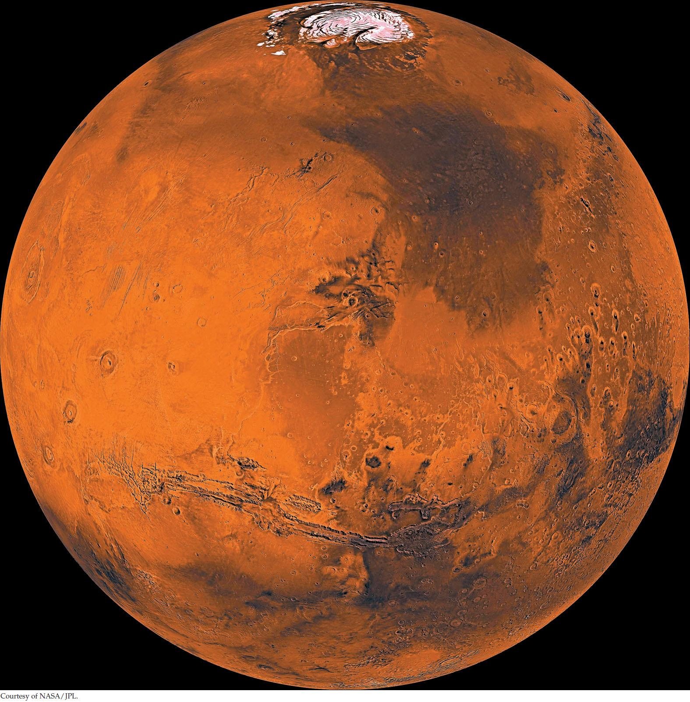

| 2 | The Chemistry and Energy of Life |
|

Polar ice caps, as shown here, have been observed on Mars for a long time, but recent evidence also shows water at the milder mid-latitudes of Mars. Finding water on Mars may indicate that it is or was hospitable to life.
|
A major discovery of biology was that living things are composed of the same chemical elements as the vast nonliving portion of the universe. This mechanistic view—that life is chemically based and obeys the universal laws of chemistry and physics—is relatively new in human history. Until the nineteenth century, many scientists thought that a “vital force,” distinct from the forces governing the inanimate world, was responsible for life. Many people still assume that such a vital force exists. However, the mechanistic view of life has led to great advances in biological science, and it underpins many of the applications of biology to medicine and agriculture. We use a mechanistic view throughout this book.
Among the most abundant chemical elements in the universe are hydrogen and oxygen, and life as we know it requires the presence of these elements as water (H2O). Water makes up about 70 percent of the bodies of most organisms, and those that live on land have evolved elaborate ways to retain the water in their bodies. Aquatic organisms do not need these water-retention mechanisms; thus biologists think that life originated in a watery environment.
Life has been found in some surprising places, often in extreme conditions. There are organisms living in hot springs at temperatures above the boiling point of water, 5 kilometers below Earth’s surface, at the bottom of the ocean, and in extremely acid or salty conditions.
Life has been found even below the Antarctic ice, a finding especially relevant to the search for life beyond Earth. Some moons that orbit Jupiter and Saturn have ice on their surfaces, overlaying oceans of water much larger than the oceans on Earth. The subsurface water on these moons may be maintained as a liquid in large part because ice is a good insulator and traps heat generated by tidal forces between the moons and their planets. Europa is a moon of Jupiter that is slightly smaller than Earth’s moon. It has an atmosphere composed primarily of oxygen, and scientists speculate that Europa’s subsurface oceans could harbor life, just as the Antarctic ice lakes do. Mars also has ice on its surface, with some evidence of subsurface water. Two of NASA’s highest priorities are to launch missions to Mars and Europa to bring back samples from these lakes to Earth.
Why is the search for water important in the search for life?